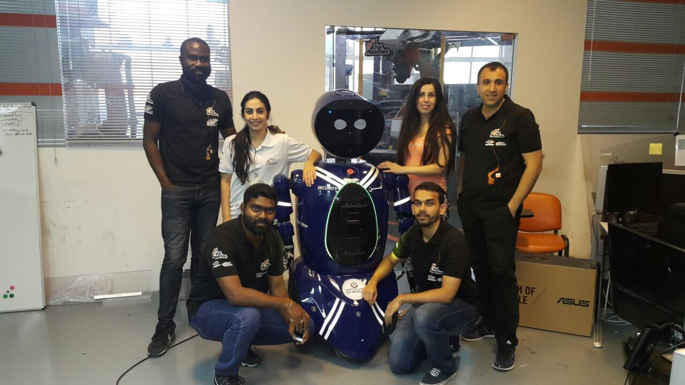

Was developing this for the first time with a opensource hardware called Pixhawk and software called ArduPilot, In specific I had a good exprience in ArduCopter and ArduPlane since the repo started(in 2012). The Drone is of X8 configuration with 2x6s LiPo battery and 8x U12 motors and 32" Propellers from T-Motors
We have been using this for our initial AutoPilot control algorithm checks like PID, Adaptive PID, SMC(Slider Motor Control). This algorithm development has been supported by professors and researchers in Gwangju Institute of Science and Technology and KAIST.
The Same above drone is been used as Precision Pesticide Spraying drone which can be carrying 20 liters of pesticide and fly as low as 5 meter and spray with accuracy of 5-8 centimeter.
I've came across few technologies like AWS, RTK GPS, WMS(Web Map Services) and Multispectral Imaging in this project. We developed a local mapserver which will have NDVI map of flying farm with this meta information(Crop health and height) the drone adapts spray density and flying height.
Working with drone I've learned many things by following a thumb rule called Design, Fly, Crash, Repair, Learn. This has given me many answers which I could't get on google
Tuning to such a workstyle is not so cost effective for high budget projects thus simulation came to play in my life as a important prototype. I had very good experience in Matlab-Simulink in Uniy's, for few research projects we get licence support for matlab, solidworks etc., In other cases we've used mostly open source ware, so Python and Github became savior's LOL. ROS, GIT, Code Navigation, Rviz, Gazebo, PyQt are few important pathways which I came across.
Getting on field test is as special day as every time! it's the place where the dream get pictured for the first time. And to be honest, field experienc is the best teacher of all time.
A one-of-it's-kind project funded by Korea Creative Content Agency. The simple objective is to fly couple of drones with a screen and a LASER projector to do 3D projection on Sky(in 30 meter height)
Eagle and TinyCAD are most often used in gerber file generation for circuit design and simulation Practised with PSpice, Proteus Design Suite and Cadance EDA
Prototyped mini boards a Arduino and RPI shield for motor, I2C, SPI, CAN drivers. RGB indicaters, keyboard and display unit holders.
The Ports allow ships with their clearance document which takes time in usual process. The DP World, Dubai had an idea of using drones to transfer the documents from ship to port office.
We have been using fixed wing plane and VTOL planes that can be take-off and land automatically for the application. Telemetry was a challenge here and constructed a parabolic antenna tracker for telemetry range of 7-15 KM.
WeGo is the first humanoid type rover I worked on. I've used 16Ch LiDAR for indoor localization with simple stereo motor driver for navigation.
It's been used for addressing the guests, checking the appointments in reception area and directing the guest to their respective cabin.

Mega VTOL
It's a prototype level Mega VTOL UAV for fire fighting, FPR for Air Transportation in medical Emergency.
The best part I've learned here in battery packing and building custom spec Motor's. I've also admired working with few German people and their passion towards aviation.
The principle work I took up in this project is Sensors (Radar, LiDAR, Ultra sonics, Cameras, GPS and IMU) and SLAM (Simultaneous Localization and Mapping).
I've mostly used a opensource ware for development "AutoWare"